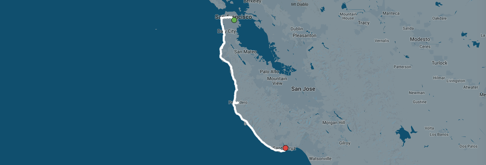
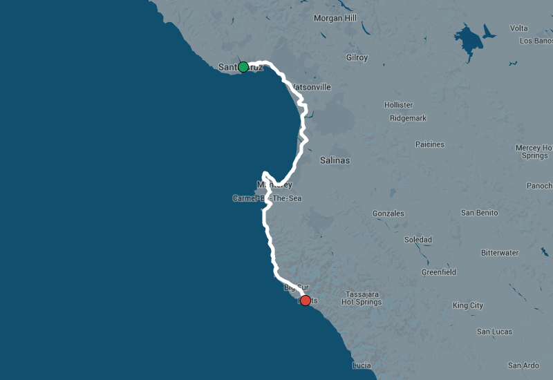
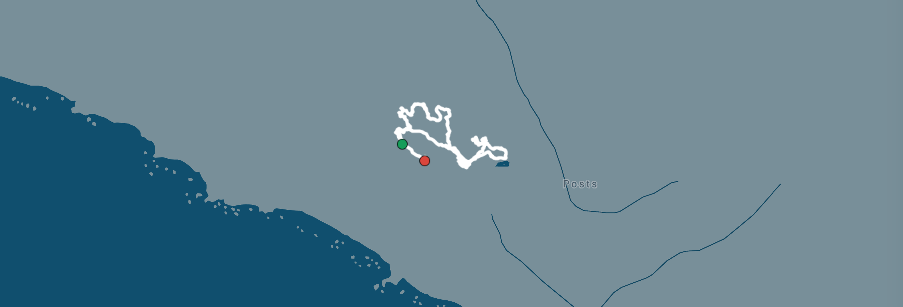
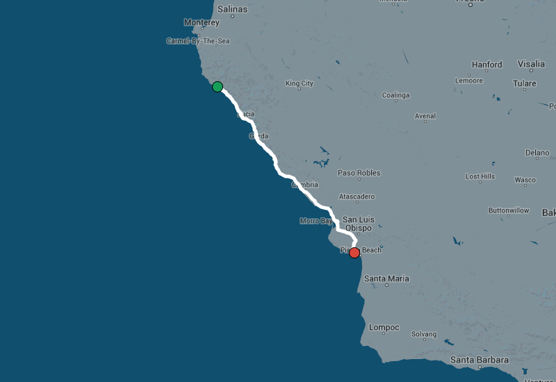
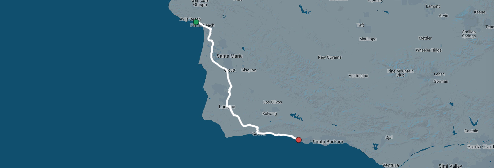
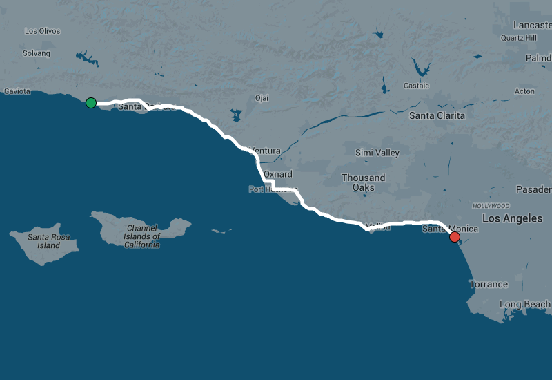
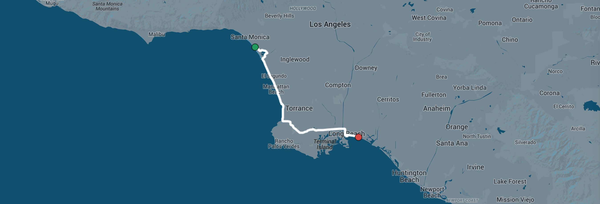

Jess and Jims' California Coast Honeymoon Adventure
By Jim Whimpey
Many months before our wedding Jess had a really good idea. Instead of the
usual multiple-day stressful lead up to our wedding day, instead of flying,
instead of driving, we would ride our bikes the 515 miles from our apartment
in San Francisco to Jess's parents' house, our wedding venue, in Long Beach
just South of LA.
We (mostly Jess) got to work planning. Her number one condition was that
we stayed in the best hotels we could along the route. She wasn't going
to be roughing it after a full day in the saddle. Every hotel was booked,
every breakfast, lunch and dinner was planned. Massages were arranged at
strategic locations. The ride was planned long before wedding planning
had even begun.
The trip turned out to be the best thing we've ever done. Spending
that time together in the days leading up to our wedding brought us together
like we hadn't been before. It was magical.
Day 1: San Francisco to Santa Cruz

Friday, August 14th 2015
Time to go. Everything was packed days ago. A friend organized a big group
roll out with our friends for the first 10 miles or so down the coast. It's
nice to have our friends there but the whole thing is a bit overwhelming. Suddenly,
thankfully, we're on our own.
We get through Pacifica to Devil's Slide and get our first serious view of the
ocean. We still have some nervous energy that we talk about and make a conscious
decision to rid ourselves of. A ripping tail wind is making everything feel easy. We're at
Pescadero before 10am and it's an easy decision to add 4 miles for the artichoke bread.

The road got smoother and the tail wind stronger the closer to Santa Cruz we got.
It gets particularly nice around Davenport where the road is recently repaved and lined
by cliffs on the left and surf beaches on the right. It would be the easiest 40 mile stretch
of our entire trip.

After a quick stop to stock up on chamois cream we got to our hotel feeling pretty fresh.
Our room not yet ready we washed our kit in the pool bathroom, hung it out to dry, ordered
cocktails and laid by the pool. By 5pm we were sick of screaming kids and retreated to
Lúpulo Craft Beer House where we spent a good hour
and got a bit drunk.
Dinner was at Assembly which I can't recommend highly
enough. The food was incredible, the atmosphere was friendly and warm, the service impeccable
and it was one of the most inexpensive dinners we had all trip.
Jess had heard that Everclear (who've been playing for
25 years) were playing a free show on the beach. I was tired and reluctant but it was
my first time at the Santa Cruz waterfront and it was surprisingly fun. I wanted to go
on a roller coaster or play in the arcade but we had no locks and no where to put the bikes.
We watched Everclear until "Heroin Girl", rode back to the hotel and crashed.

Day 2: Santa Cruz to Big Sur

Saturday, August 15th 2015
South of Santa Cruz was new riding territory for us both. I'd mapped routes using
a combination of the most direct and the most popular sections of road on Strava.
We knew the riding from Monterey to Big Sur would be spectacular and hadn't really
thought about what it'd be like before that. It turned out to be stunning.

For miles and miles we passed perfectly aligned strawberry fields, kale, artichoke
and flower farms. In parts the farms were hives of activity but the roads were quiet
and the weather was perfect. We had a super long lunch at
Happy Girl Kitchen in Monterey and packed some of their amazing vegan snickerdoodle
cookies in our bags for later.
Unfortunately our trip clashed with the the annual
Pebble Beach Concouse d'Elegance motor show which meant we could only ride part
of 17 Mile Drive. We convinced the security guard to let us ride the final section
but not before a brutally hot and steep climb away from the coast.

Big Sur was expectedly spectacular. The Bixby Canyon Bridge is the subject of
one of my favorite songs so we spent a bit of time there taking in the scenery and
watching waves of Ferraris, Lamborghinis, McClarens and Maseratis roll by.
The day's ride got progressively hillier and I knew we finished with the longest climb of the day.
It was also hot. Only 3 miles out as we approached the final climb Jess and I debated
stopping for a drink. She just wanted to get there but I made us stop. We drank an ice cold coke
on a the ground of a dirty gas station and that moment was honestly one of the highlights of
the whole trip. I had routed us to the Post Ranch Inn
driveway entrance but it only climbed further from there. We arrived drenched in sweat, dirty and
unable to talk as another Ferrari pulled into the car park.

Post Ranch was overwhelmingly luxurious. We justified it with the "honeymoon" title. Our cabin was
huge, our bed was a cloud, there was champaign on ice awaiting us, the minibar was well stocked
and 100% complimentary. After a shower that looks out into the forest we waste no time getting
to the hot tub with a view 1200ft above the ocean.
There's no one around, it's quiet, the water is 104℉, we've raided the beer, coke, wine and chips
from our minibar and we can see humpback whales migrating below. It was unreal.
Dinner is at the Post Ranch restaurant on the property. It is a four course vegan extravaganza
with most of it coming from their own garden. We're there for hours.
from our table we can see nothing but ocean and we eat so much we can barely move. Day two
is a complete success.
Day 3: Rest Day in Big Sur

Sunday, August 16th 2015
Our first and only rest day. We slept as late as we could without missing the breakfast time
cut. Breakfast was an insane all you can eat spread. Again we ate until we thought we would
explode. When we got back to our room our minibar had been restocked including the a cookie
jar fogged up by the warmth of the freshly baked cookies. We decided going out for lunch
was going to be unnecessary.

Many months in advance Jess booked us massages. Our legs needed it.
Post Ranch has a network of private trails through the forest and we walked through them really
slowly on the way to check out other stuff. We found the the huge vegetable and flower garden,
a nest and the mercantile. We found the big pool and sat in it for an hour to cool off.

Still full from two consecutive massive meals we got sandwiches delivered for dinner to the hot
tub. We spent five hours eating, drinking, watching the sunset and chatting to a few
other guests. Given our next day would be our biggest it was a perfect afternoon. Another day would have
been too indulgent.
Day 4: Big Sur to Pismo Beach

Monday, August 17th 2015
The queen stage.
We'd organized the night before to have breakfast delivered to our favorite hot tub at 6:30am.
Post Ranch were happy to oblige. We got to watch the sun rise over a thick cloud of fog
sitting over the ocean hundreds of feet below. We finished our fruit and granola, got on
our bikes and descended into the cold, wet fog we were just watching from above.

The next couple of hours would be the only time all week we felt like we needed warmer
clothes on the bike. The worst part about the fog was that we couldn't see the ocean
we were following on what's supposed to be some of the most beautiful parts of the California
coast. The plus side was that the few cars that were on the road were very slow and cautious.
Despite not being able to see the ocean, we could almost always hear it.
Sometimes towards the top of a climb we'd peak out of the fog only to drop back in a
moment later. After our past two very hot riding days it was partially a relief.

As we left Big Sur the road got flatter, straighter and we settled into a nice rhythm. Just
North of San Simeon we came to the
Piedras Blancas rokcery home to a huge family of elephant seals! Jess had read all about it
but kept it a surprise for me. They've built a boardwalk right no the beach and you can get super
close.
Lunch was an incredibly fast, cheap and delicious vege burger, salad and fries in Cayucos.
The next 20 miles or so we headed inland through the strange Los Osos with a ripping tailwind. The
final 15 miles, 100 to 115, we turned into the wind through San Luis Obispo and it was rough.
We rolled into The Cliffs Resort at 4pm, our latest arrival all trip, really tired. They told
us our room wasn't ready yet and we lost patience 10 minutes later and demanded a room. We
had an incredible top floor room with a view over the pool and out to the ocean. The pool was
a cacophony of kids so we got room service and just sat in the sun on our balcony until
dinner time. It was really nice.

I barely remember what we had for dinner that night or when we went to bed. Oh, waiting for us
when we arrived were a fresh pair of bibs Jess had delivered from
Machines for Freedom which literally saved her butt for the rest of the trip.
Day 5: Pismo Beach to Santa Barbara

Tuesday, August 18th 2015
We knew today wasn't going to be the most spectacular as far as riding goes and
that there was going to be a great hotel waiting for us in Santa Barbara so our
plan was to leave right at sunrise and smash out the 90 miles with minimal stopping.
The inland route took us back through farmland, pretty much following the train line
that heads down the west coast.

Half way we hit the town of Lompoc which I'd never heard of before. I ate entire
can of Pringles myself and drank a bottle of coke. Jess had an iced coffee. By this point
both our chains were starting to get a little raw and I didn't bring chain lube. I stopped
at a car mechanic but he sprayed WD40 on them before I could stop him. Luckily there was a
Home Depot just up the road where I bought some real lube before getting out of there.
A very long but steady climb followed where I struggled but Jess excelled.
INSERT SIGN CROSSROADS PIC HERE
The final 20 miles into Santa Barbara were really tough. The only option is the shoulder of the
101 with cars flying past at 70mph. There was a cone placed in the shoulder every 100ft which
made things more stressful. It was the worst stretch of road to ride on the entire trip. Despite
that we'd still made great time all day and rolled into the golden archway of
Bacara at around 1pm.

Day 6: Santa Barbara to Santa Monica

Day 7: Santa Monica to Long Beach
